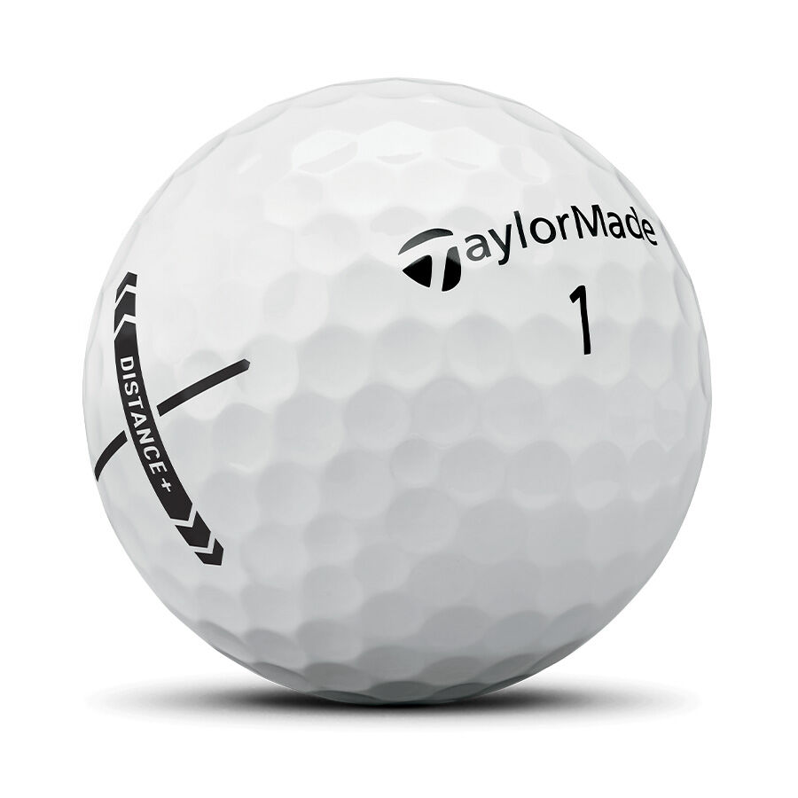
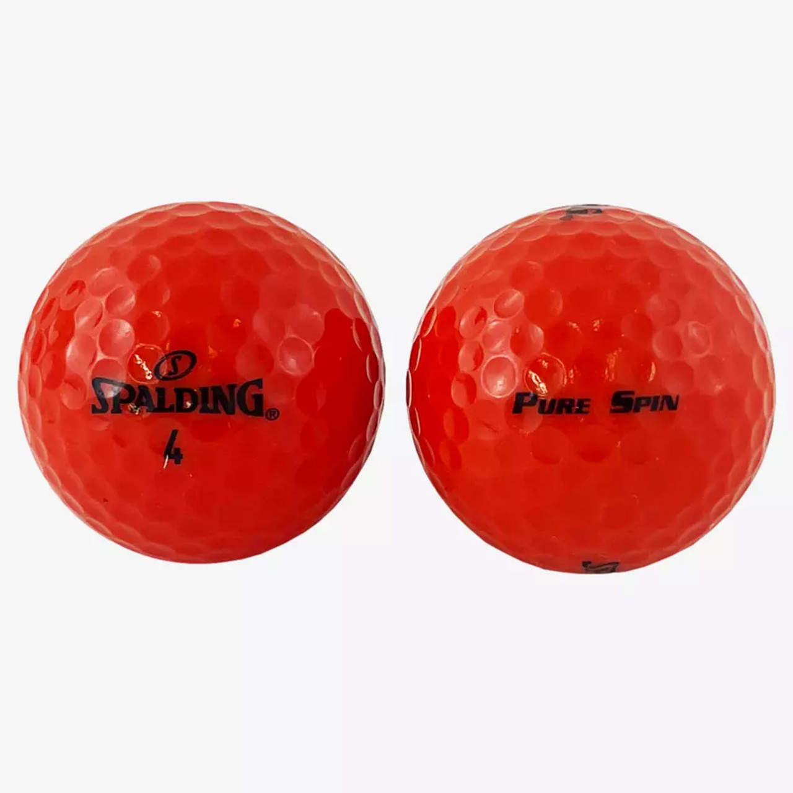
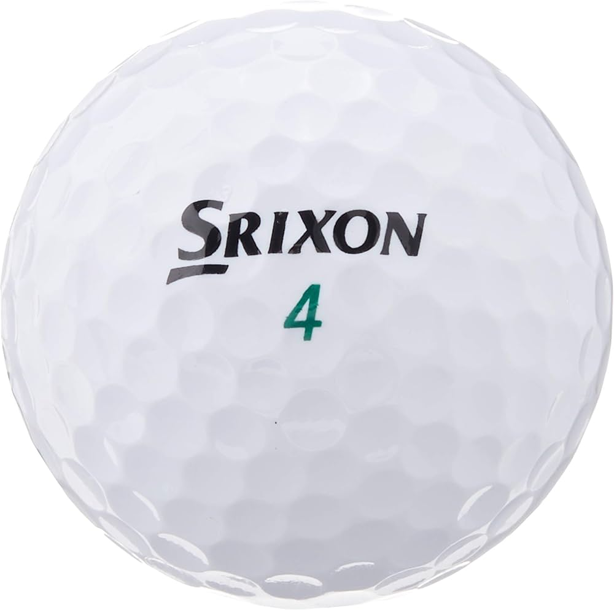

Golf balls have come a long way since the 14th century when the sport was first introduced, and today, they have become so modernized and well-made, that they have have even had to change the way they are made because they were going so far in professional torunaments.From rocks to wood and other creations, the origins of the golf ball can be traced back to five distinct stages.

Designed for maximum carry and roll. Great for beginners or high handicappers who want more yardage. Usually harder with less spin.

Engineered for control and short game finesse. Offers higher spin around the greens for more stopping power, favored by skilled players.

Provide a more comfortable and responsive feel, especially on putts and chips. Typically have lower compression for slower swing speeds.